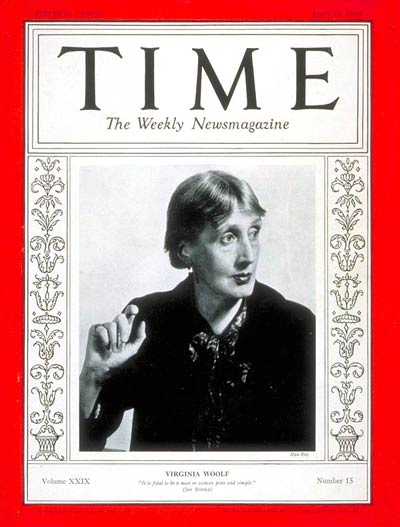

Monday, January the 21st, 2013
back to: title, date or indexes

The sausage-and-haddock woman, writing on this day in 1918:
Lytton came to tea; stayed to dinner, and about 10 o' clock we both had that feeling of parched lips and used up vivacity which comes from hours of talk. But Lytton was most easy and agreeable. Among other things he gave us an amazing account of the British Sex Society which meets at Hampstead. [Now there's a surprise.—FK] They were surprisingly frank; and fifty people of both sexes and various ages discussed without shame such questions as the deformity of Dean Swift's penis; whether cats use the w.c.; self abuse; incest . . . I think of becoming a member. Lytton at different points exclaimed Penis; his contribution to the openness of the debate. We also discussed the future of the world; how we should like professions to exist no longer; Keats, old age, politics, Bloomsbury hypnotism—a great many subjects.
Hooting Yard on the Air, January the 31th, 2013 : “Ford Madox Unstrebnodtalb's Diary 15.1.13” (starts around 20:53)